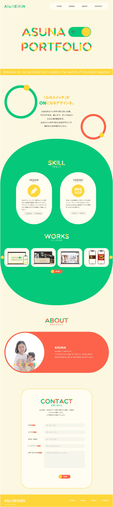

つくったもの


ポートフォリオサイト
カテゴリー
ポートフォリオ
担当範囲
デザイン
コーディング
ツール
illustrator / photoshop
VS Cord / Git Hub
制作期間
2カ月
制作概要
自身のポートフォリオサイトを制作しました。
制作ポイント
・世界観はワクワク、楽しくなるようなサイトを表現したく、明るいカラーに配色したのとアニメーションで動きをつけました。
・FVの文字や各タイトルの文字をモチーフのトグルスイッチを連想できるようにデザインしました。
・フォントやあしらいなど全て丸で揃えてコンセプトと世界観に合うようにしました。